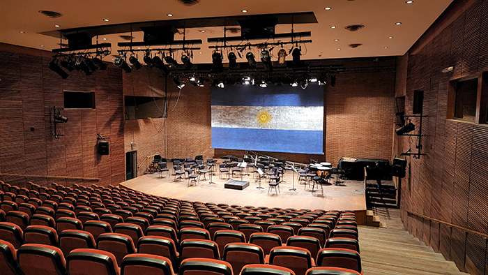

130 Años de
Historia
Y más de 80 años ofreciendo espectáculos y propuestas culturales de calidad a la comunidad, producidos de forma integral por artistas, profesionales y personal especializado.
Sala
Ginastera
Es la sala principal del Teatro. Posee la forma tradicional “a la italiana” en herradura, y entre plateas y los tres niveles de palcos y galerías está en condiciones de albergar a 2000 espectadores. Es ámbito de normal desarrollo de las temporadas líricas, espectáculos coreográficos, y conciertos sinfónicos y populares.

Sala
Piazzolla
Inaugurada en mayo del 2000. Está dedicada a las artes de cámara con capacidad para 300 espectadores. En este espacio se realizan conciertos de cámara, producciones teatrales, recitales populares, conferencias y congresos